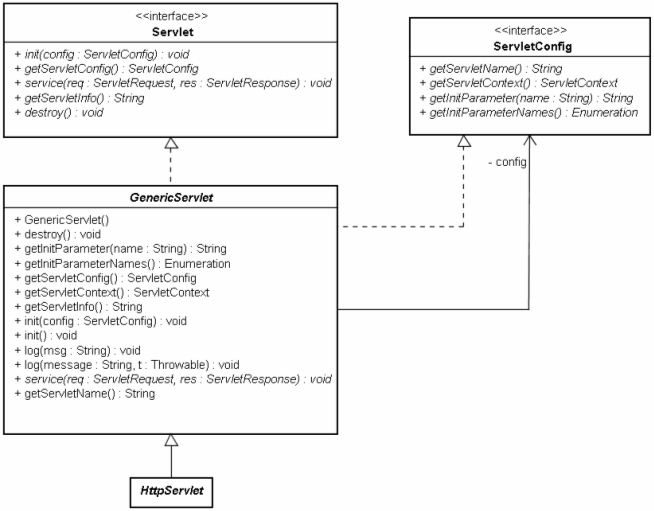

|
|
在web容器啟動後，會讀取標註（Annotation）或web.xml的設定，根據當中的每個Servlet的設定，將Servlet類別載入並實例化，並為每個Servlet的設定產生一個ServletConfig物件，而後呼叫Servlet介面的init()方法，並將產生的ServletConfig物件當作引數傳入。 ServletConfig即Servlet中的標註或web.xml中每個<servlet>設定的代表物件，容器會為每個Servlet產生一個Servlet及ServletConfig實例。GenericServlet同時實作了Servlet及ServletConfig。  GenericServlet主要的目的，就是將初始Servlet呼叫init()方法所傳入的ServletConfig封裝起來： private transient ServletConfig config;
public void init(ServletConfig config) throws ServletException { this.config = config; this.init(); } public void init() throws ServletException { } GenericServlet在實作Servlet的init()方法時，也呼叫了另一個無參數的init()方法，基本上你在撰寫Servlet時，如果有一些初始時所要執行的動作，可以重新定義這個無參數的init()方法，而不是直接重新定義有ServletConfig參數的init()方法。 注意！當你有一些物件實例化後所要執行的動作，必須定義建構式。在撰寫Servlet時，若想要執行與Web應用程式資源相關的初始化動作時，則要重新定義init()方法。舉例來說，若你想要使用ServletConfig來作一些事情，則不能在建構式中定義，因為實例化Servlet時，因為容器還沒有呼叫init()方法傳入ServletConfig，所以不會有ServletConfig實例。 GenericServlet也包括了Servlet與ServletConfig所定義方法的簡單實作，實作內容主要是透過ServletConfig來取得一些相關資訊，例如： public ServletConfig getServletConfig() {
return config; } public String getInitParameter(String name) { return getServletConfig().getInitParameter(name); } public Enumeration getInitParameterNames() { return getServletConfig().getInitParameterNames(); } public ServletContext getServletContext() { return getServletConfig().getServletContext(); } 所以當你在繼承HttpServlet實作Servlet時，就可以透過這些方法來取得所要的相關資訊，而不用直接意識到ServletConfig的存在。 若要使用標註設定個別Servlet的初始參數，可以在@WebServlet中使用@WebInitParam設定initParams。例如： ...
@WebServlet(name="ServletConfigDemo", urlPatterns={"/conf"}, initParams={ @WebInitParam(name = "PARAM1", value = "VALUE1"), @WebInitParam(name = "PARAM2", value = "VALUE2") } ) public class ServletConfigDemo extends HttpServlet { private String PARAM1; private String PARAM2; public void init() throws ServletException { super.init(); PARAM1 = getServletConfig().getInitParameter("PARAM1"); PARAM2 = getServletConfig().getInitParameter("PARAM2"); } .... } 若要在web.xml中設定個別Servlet的初始參數，可以在<servlet>標籤之中，使用<init-param>進行設定，web.xml中的設定會覆蓋標註的設定。例如： ...
<servlet> <servlet-name>ServletConfigDemo</servlet-name> <servlet-class>cc.openhome.ServletConfigDemo</servlet-class> <init-param> <param-name>PARAM1</param-name> <param-value>VALUE1</param-value> </init-param> <init-param> <param-name>PARAM2</param-name> <param-value>VALUE2</param-value> </init-param> </servlet> ... 由於ServletConfig必須在Web容器將Servlet實例化後，呼叫有參數的init()方法再將之傳入，是與Web應用程式資源相關的物件，所以在繼承HttpServlet後，通常會重新定義無參數的init()方法以進行Servlet初始參數的取得。GenericServlet定義了一些方法，將ServletConfig封裝起來，便於取得設定資訊，所以取得Servlet初始參數的程式碼也可以改寫為： ...
@WebServlet(name="ServletConfigDemo", urlPatterns={"/conf"}, initParams={ @WebInitParam(name = "PARAM1", value = "VALUE1"), @WebInitParam(name = "PARAM2", value = "VALUE2") } ) public class AddMessage extends HttpServlet { private String PARAM1; private String PARAM2; public void init() throws ServletException { super.init(); PARAM1 = getInitParameter("PARAM1"); PARAM2 = getInitParameter("PARAM2"); } …. } 下面這個範例簡單地示範如何設定、使用Servlet初始參數，其中登入成功與失敗的網頁，可以由初始參數設定來決定： package cc.openhome; |